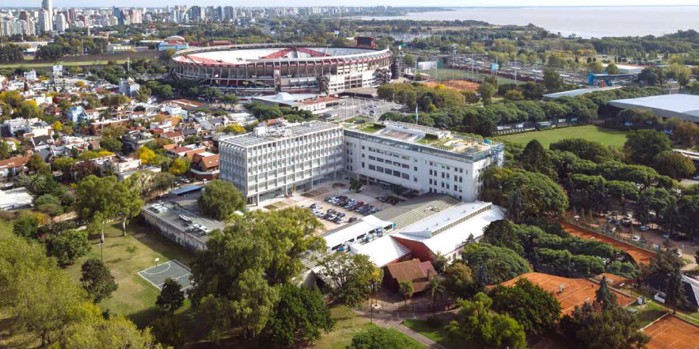
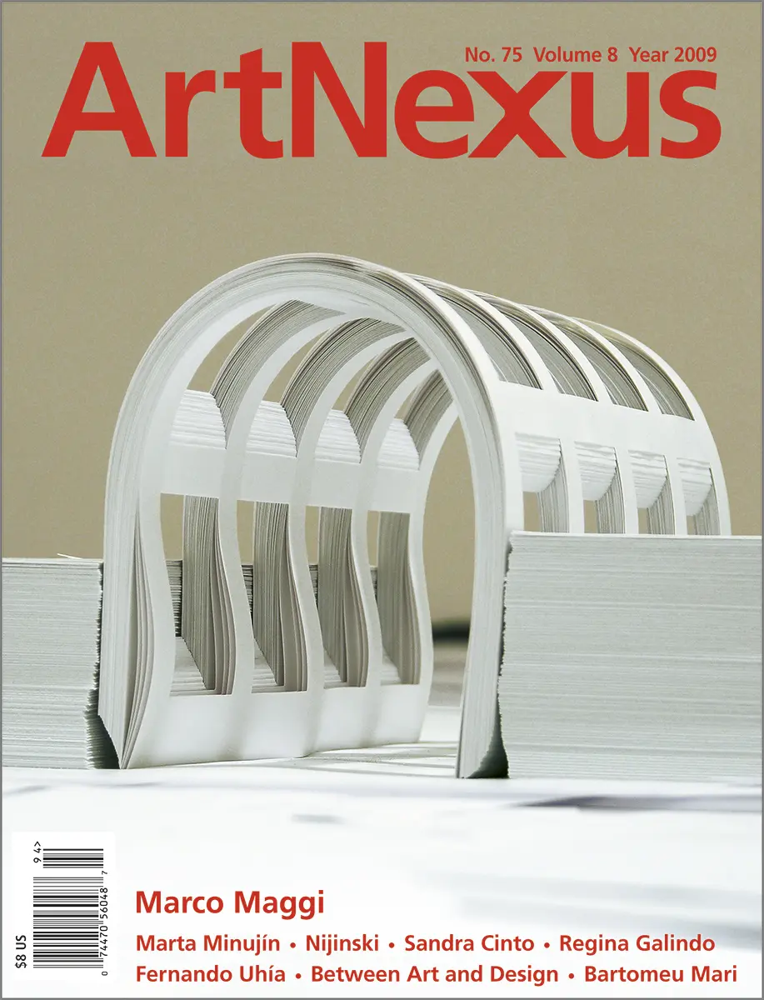
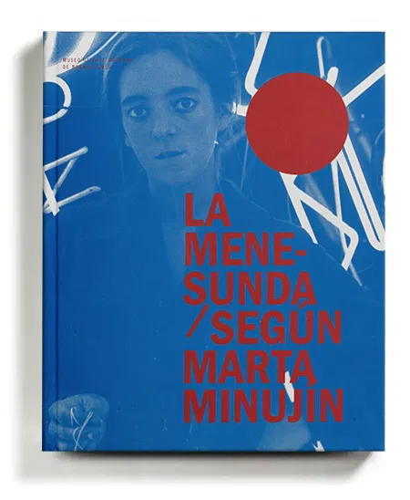
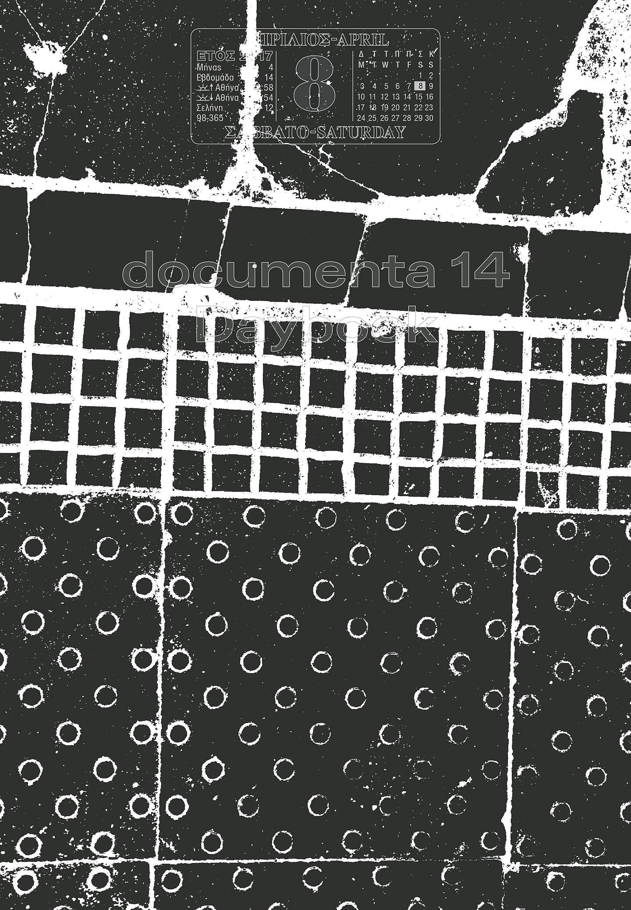
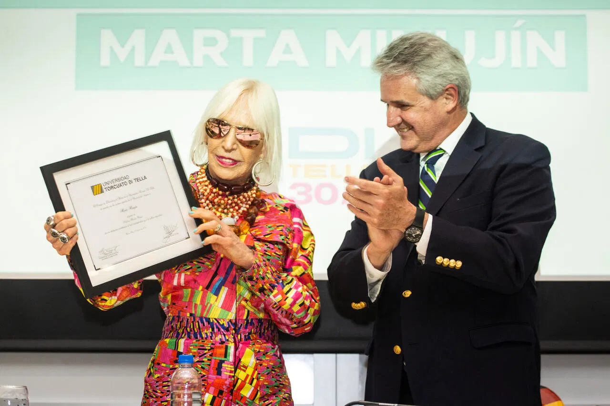
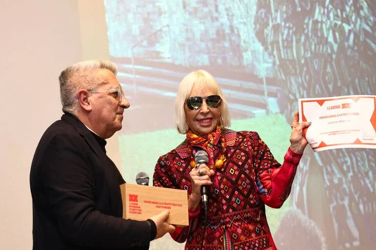

Reconocimiento institucional · 1964
Premio Di Tella
Recibió el Premio Nacional del Instituto Torcuato Di Tella.
Fuente: Catálogo del MALBA, p. 137.
Instituciones, crítica y algunas distinciones que acompañaron a Minujín a lo largo de su carrera.

Reconocimiento institucional · 1964
Recibió el Premio Nacional del Instituto Torcuato Di Tella.
Fuente: Catálogo del MALBA, p. 137.

Crítica · 2009
En esta revista, Victoria Verlichak describe Suceso plástico (1965) como una acción de gran escándalo y considera improbable que una propuesta de ese tipo vuelva a repetirse.
Fuente: Victoria Verlichak, Artnexus #75, diciembre de 2009 – febrero de 2010.
Muestra institucional · 2014
El MALBA presentó la retrospectiva Marta Minujín. Obras 1959–1989, con curaduría de Victoria Noorthoorn. La curadora propone tres claves de lectura: redefinir las categorías del arte, imaginar un destino a escala mundial y afirmar una libertad del cuerpo y del espíritu.
Fuente: MALBA, nota sobre la exposición, 4 de septiembre de 2014.

Publicación institucional · 2015
"La Menesunda / Según Marta Minujín" se presentó en el Museo de Arte Moderno de Buenos Aires entre el 8 de octubre de 2015 y el 28 de febrero de 2016. Una de sus autoras, Sofía Dourron, describe una experiencia que confrontaba y sorprendía al visitante, y señala que sus creadores no la consideraban ni una obra ni un happening.
Fuente: Sofía Dourron, texto en el libro publicado por el MAMBA, 2015–2016.

Muestra internacional · 2017
Pierre Bal-Blanc lee los monumentos de Minujín como una forma de repensar la democracia y la educación a través del arte. Para él, la obra vuelve a poner en juego símbolos de la vida pública.
Fuente: Pierre Bal-Blanc, texto sobre El Partenón de libros, documenta 14, 2017.
Reconocimiento institucional · 2019
Recibió el Premio Nacional a la Trayectoria del Fondo Nacional de las Artes, entregado en el Museo Nacional de Bellas Artes.
Fuente: Fundación Konex, biografía de Marta Minujín.
Crítica · 2020
Inés Katzenstein sostiene que, en el caso de Minujín, es difícil separar la obra de la figura de la artista. Su fama, estable y ampliamente reconocida, funciona como la obra más auténticamente pop y la convierte en un ícono de la cultura argentina.
Fuente: Inés Katzenstein, La Nación, 29 de junio de 2020.

Reconocimiento institucional · 2021
La Universidad Torcuato Di Tella le otorgó el grado de Doctora Honoris Causa. Carlos Huffmann destacó que su práctica redefinió el arte conceptual para incorporar la alegría de las celebraciones populares como una forma de validación estética.
Fuente: UTDT, "Marta Minujín recibió el grado de Doctora Honoris Causa", 11 de noviembre de 2021.

Reconocimiento institucional · 2026
La Bienal Internacional de Arquitectura de Buenos Aires le otorgó el Premio a la Trayectoria. Según La Nación, es la primera artista reconocida por su trayectoria en esa bienal, a los 83 años.
Fuente: Celina Chatruc, La Nación, 11 de octubre de 2026.
Crítica · 2026
Álvaro De Benit analiza la reconstrucción de La Menesunda y sostiene que la obra no quedó anacrónica. Nacida como algo disruptivo, hoy funciona como testimonio de una época distinta.
Fuente: Álvaro De Benit, Artealdia, 18 de noviembre de 2026.
Valorar una obra implica, en parte, preguntarse qué quedó de ella. Visiten la galería para ver esos registros.